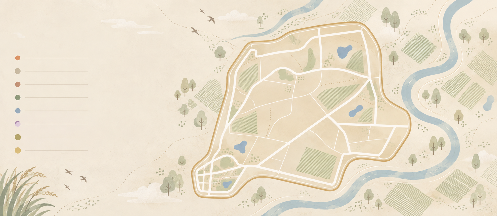

關於我們
壯遊據點
走讀路線
1 DAY
一日遊規劃
工藝、老街、科技等 A~F 方案
2 DAYS
兩日遊規劃
工廠村寄宿與雙城深度慢活
CRAFT
文創產業線
日式官舍、刺繡館與木藍染
EDU
戶外教育專案
嘉禮有糖高中職 A~D 走讀
GLOBAL
國際壯遊引力
跨國青年炒糖與雙偶文化體驗
職人故事
最新消息
繁中 ˅
開始規劃
✕
SEARCH SPOTS
搜尋
PEOPLE
PLACES
CULTURE
STORIES
S P O T S
壯遊據點
走進六腳與朴子，探索土地最真實的樣貌。
從一個據點開始，
發現更多土地的故事。
SCROLL TO MAP

▣
全部據點
12
♜
產業文化
3
♨
工藝創作
2
♟
在地飲食
2
♧
社區人文
2
⌂
自然生態
1
▤
宗教信仰
1
▤
文化創新
1
📍
六腳鄉
✕
蒜頭糖廠文化園區
✦
✦
查看推薦走讀路線 →